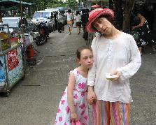
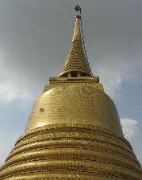
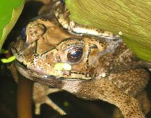
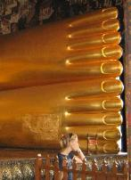

On 04-09-2007 my family and I tried to visit the royal barges. First we got a tuk tuk but they dropped us off at the wrong place. Then we walked for a long time until we found the pier on the river where boats stop. We got onto a boat but unfortunately it didn't stop at the pier we wanted so we had to walk and walk. We walked and walked until we came came to some tourists who told us the royal barges were closed for several weeks. We were hot, tired and disappointed. We walked back to the river and over the bridge. We shared two green coconuts. There were so delicious they refreshed us enough to walk home.

On 05-09-2007 we went to the Golden Mount. I rang lots of bells and we found some toads. We also saw Wat Po, where the reclining buddha is. It was very big and beautiful. It's feet were very flat and had lots of pictures of buddha under them. When we were back at the hotel I tried to pull my tooth out and with some help we pulled it out. It was an exciting experience.
  
From Thailand we went to Vienna. We saw nothing because it rained all day. Next morning we flew to Madrid.